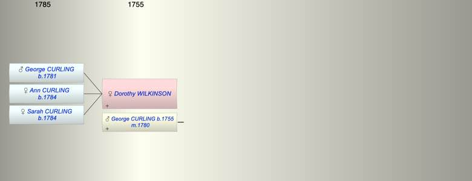

| [Index] |
| Dorothy WILKINSON |
|  |
| m. 23 Dec 1780 George CURLING (1755 - ) at St Botolph |
| Children (3): |
| George CURLING (1781 - ) |
| Ann CURLING (1784 - ) |
| Sarah CURLING (1784 - ) |
| Events in Dorothy WILKINSON's life | |||||
| Date | Age | Event | Place | Notes | Src |
| 23 Dec 1780 | Married George CURLING (aged 25) | St Botolph | Note 1 | ||
| 1781 | Birth of son George CURLING | London | Note 2 | ||
| 1784 | Birth of daughter Ann CURLING | London | Note 3 | ||
| 1784 | Birth of daughter Sarah CURLING | London | Note 4 | ||
| Created on a Mac™ using iFamily for Mac™ on 8 Oct 2023 |